Hi, I'm Abhishek!
I am a mobile security engineer working across the mobile stack, from the applications people use every day to the operating system beneath them. I focus on making these systems secure by design, assessing the threats they face and protecting the personal data they handle, with applied AI supporting each of these efforts.


Research interests
Mobile devices are now used for an ever wider range of everyday activities, and the personal and sensitive data they handle keeps growing. Applications and the platform beneath them are given varying levels of access to this data, which raises several related challenges, including:
- How can mobile applications deliver useful and intelligent services while keeping user data secure?
- How can the behavior of mobile applications be assessed reliably and at scale, especially when that behavior is deliberately hidden?
- How can a mobile platform be made secure by design, and how can that security be verified systematically across its architectural layers?
- How can the security and privacy of personal data be guaranteed, and the collection and use of that data be made transparent?
My work aims to address these challenges across the mobile stack, from applications to the underlying platform and its wider ecosystem, with a focus on application security, threat assessment, platform security and privacy assurance, supported by applied AI.